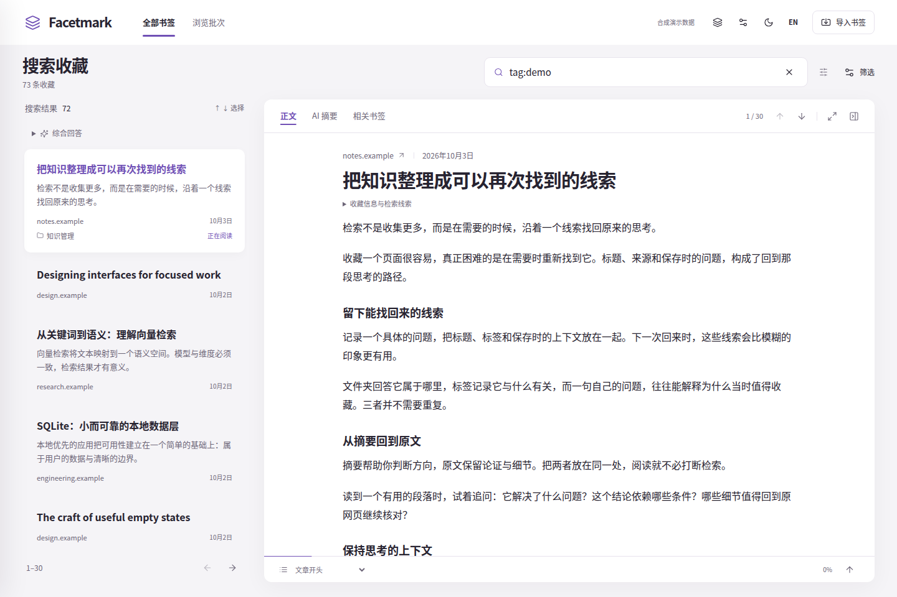

Windows 桌面预览#
测试分支提供 Tauri 2 桌面应用和共享 React 收藏检索与阅读界面。分别配置聊天与向量模型，先测试连接，再确认索引；无需 Key 也能使用关键词检索。原始浏览器书签只读。
Windows 桌面预览
从最新成功运行下载 facetmark-windows-x64-preview。安装包含 Python 后端与 WebView2 离线安装器；不带大模型。这是测试安装包，可能出现 SmartScreen 提示，尚未正式发布。
打开与配对#
facetmark serve在服务所在电脑访问 http://127.0.0.1:8787/app，通常自动配对。通过域名或其他设备访问时，填写服务端 facetmark token 输出的令牌。
首次设置#
- 导入 HTML 或 JSON 副本，也可主动查找并选择本机 Chromium 来源。
- 分别填写聊天和向量服务，独立测试，检查实测维度，再保存与应用。免 Key 仅允许显式本机服务。
- 确认数据发送范围后开始索引；可以跳过 AI，直接用关键词检索。任务显示阶段和真实失败，可取消或重试。
选择要做的事#
| 入口 | 用途 |
|---|---|
| 全部书签 | 真实分页，文件夹／标签／站点筛选；输入词语或查询语法开始搜索。 |
| 阅读预览 | 正文、AI 摘要和相关书签。打开原网页使用系统浏览器，预览不丢失搜索条件。 |
| 综合回答 | 位于搜索结果上方，确认后发送问题与最多 8 条来源摘要，回答附编号引用与证据局限。 |
| 浏览批次 | 选择收藏时段，以批次范围继续检索。 |
| 任务与设置 | 索引、取消、诊断、双模型连接、扩展配对和手动检查更新。 |
读懂一条搜索结果#

从收藏索引中打开文章，搜索条件和列表位置会保留。桌面可展开专注阅读；窄窗口以全屏阅读打开，点击“返回收藏”继续查找。展开“收藏信息与检索线索”查看来源信息；排名不是事实核查。
快捷键与阅读偏好#
| 操作 | 结果 |
|---|---|
| Ctrl+K | 聚焦搜索；支持中文输入法组合输入。 |
| ↑ / ↓ | 在结果列表中选择相邻书签。 |
| Escape | 关闭预览或手机导航并还原焦点，保留查询。 |
| 语言／主题 | 在中英文、明暗模式间切换，保存到当前设备。 |
没有结果或无法管理#
无结果时清除筛选或换一个标题词。没有 Key 时仍可用关键词检索。连接失败可重试；相关书签与批次请求失败会单独提示。远程访问不开放管理接口，请使用 loopback 或 SSH 转发。